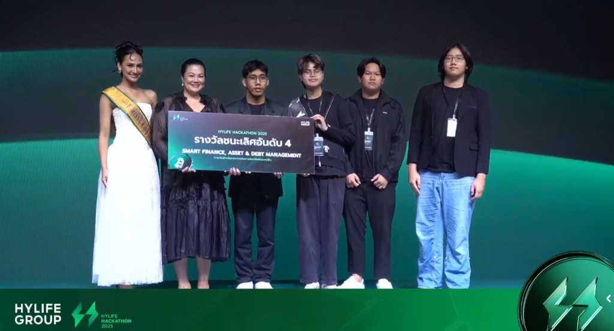
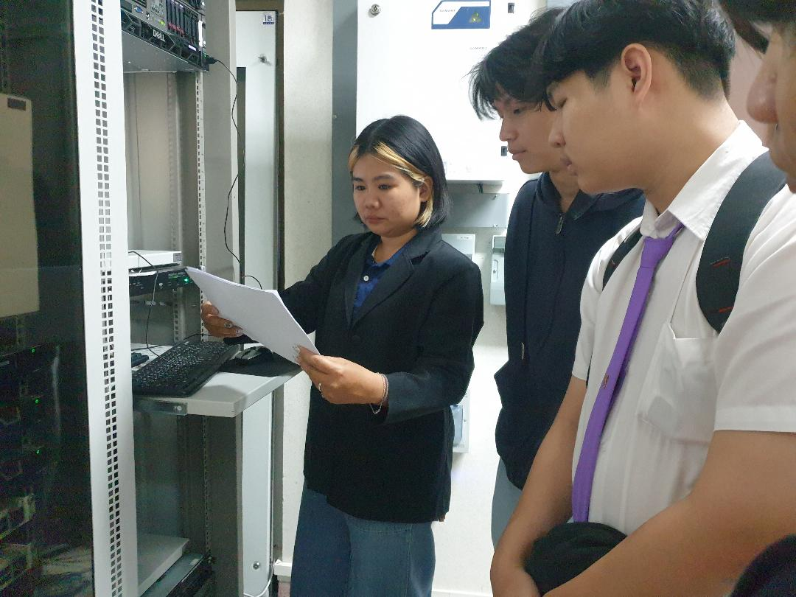
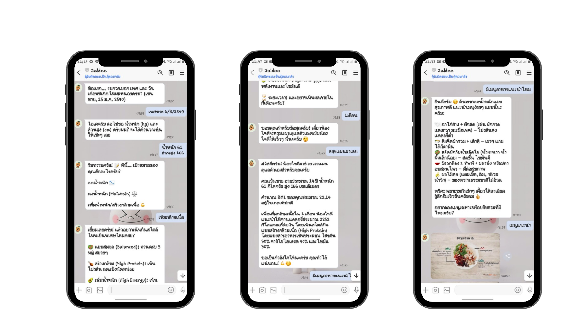
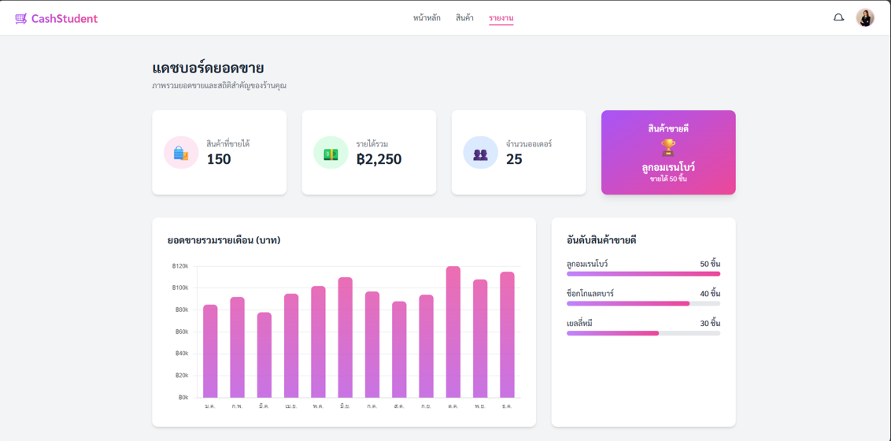

โปรเจกต์

โปรเจกต์แข่งขันในสาย Smart Finance, Asset & Debt Management บันทึกรายรับรายจ่ายอัตโนมัติ เชื่อมต่อกับธุรกรรมทางการเงินได้โดยตรง มี AI ช่วยแนะนำการใช้เงินรายวันและพยากรณ์รายรับรายจ่ายในอนาคต รับผิดชอบด้าน Business — วางไอเดียและ Business Model พร้อมค้นคว้าโมเดลทางสถิติให้ต่างจากคู่แข่ง

โครงการภายใต้ Office TurnPro ร่วมกับสำนักงานจังหวัดเชียงใหม่ นำกล้อง CCTV มาใช้ร่วมกับ AI เพื่อตรวจจับพฤติกรรมเสี่ยงในพื้นที่สำนักงาน พร้อมแดชบอร์ดแสดงผลแบบเรียลไทม์ให้ผู้บริหาร แก้ปัญหาเจ้าหน้าที่รักษาความปลอดภัยไม่เพียงพอต่อการเฝ้าหน้าจอตลอดเวลา รับผิดชอบส่วนออกแบบหน้าตา UI ของแดชบอร์ดให้ผู้ใช้เข้าใจง่าย

ปลอกคออัจฉริยะที่ใช้ AI และเซนเซอร์ (Heart Rate, IMU, HRV) ติดตามสุขภาพแมวตลอด 24 ชั่วโมง พร้อม AI Chatbot ตอบคำถามสุขภาพและแปลพฤติกรรมแมว เจาะกลุ่มเจ้าของแมวที่เลี้ยงแบบลูก โดยเฉพาะสายพันธุ์เสี่ยงโรคหัวใจ แก้ปัญหาเจ้าของไม่รู้ว่าแมวป่วยจนอาการหนัก

โปรเจกต์ขอทุนสนับสนุนจาก Builds CMU ทำเป็นโค้ชผู้ช่วยเรื่องสุขภาพผ่านแอปพลิเคชัน LINE ใช้ AI Agent จัดการบทสนทนา และ Gemini API ตอบคำถามด้านสุขภาพและสารอาหาร เจาะกลุ่มคนวัยทำงานที่อยากดูแลสุขภาพแต่ไม่สะดวกพบผู้เชี่ยวชาญหรือบันทึกข้อมูลเอง

โปรเจกต์จากรายวิชาในหลักสูตร DII, CAMT